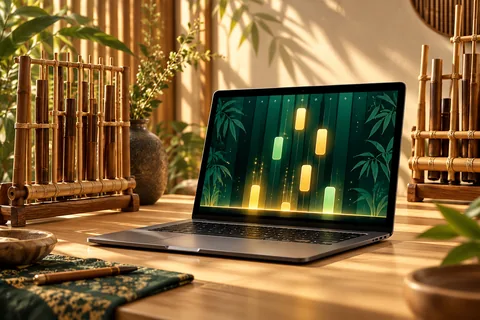
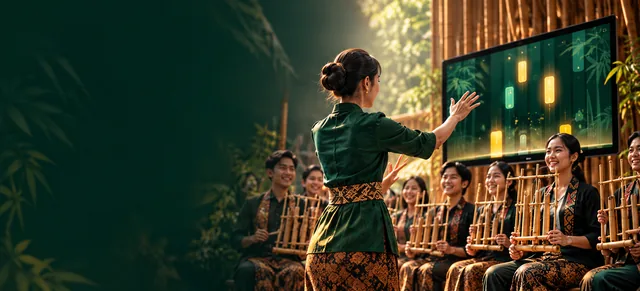
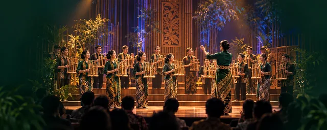

Kebersamaan
Semangat bermusik
dan bertumbuh bersama.
Galung mempertemukan angklung dan pendekatan musik visual dalam satu gagasan: pengalaman bermusik yang lebih terbuka.
Semangat bermusik
dan bertumbuh bersama.
Arah eksplorasi
pengalaman musikal.
Terinspirasi dari
semangat ansambel.
Berangkat dari angklung
dan tradisi Indonesia.
Dari akar tradisi menuju eksplorasi musik visual.
Kenali gagasan di balik Galung, arah pengembangannya, dan informasi rilis yang akan menyertai perangkat lunaknya.

Angklung menjadi inspirasi untuk menjelajahi hubungan antara bunyi, gerak, dan kebersamaan.

Kedua kartu memperkenalkan satu produk dan inspirasinya. Seluruh visual AI bersifat konseptual, bukan bukti fitur atau kegiatan nyata.
Kenali Galung dan inspirasi di balik pengembangannya.
Baca rincian fitur ketika informasinya telah diverifikasi.
Unduh tanpa login saat berkas resmi tersedia.

Kami ingin membawa semangat angklung ke ruang eksplorasi digital, tanpa meninggalkan nilai yang membuatnya berarti: saling mendengarkan, mengambil peran, dan bermain bersama.
Galung adalah perangkat lunak musik dengan arah pengembangan yang berfokus pada angklung, musik visual, dan semangat pembelajaran yang lebih terbuka.
Bagi kami, perkembangan teknologi adalah kesempatan untuk mengeksplorasi cara baru mendekati musik. Galung tumbuh dari keinginan untuk mempertemukan warisan musikal dengan pengalaman digital, sambil menjaga semangat kebersamaan di dalamnya.
Ruang untuk berbagi dokumentasi kegiatan dan proyek yang berkaitan dengan Galung.
Belum ada proyek yang dipublikasikan. Dokumentasi akan ditambahkan setelah informasi dan izin publikasinya lengkap.
Ikuti informasi pengembangan, pengumuman, dan catatan perjalanan Galung.
Belum ada berita yang dipublikasikan. Kunjungi kembali halaman ini untuk membaca kabar berikutnya.
Berkas unduhan belum tersedia pada pratinjau ini. Nomor versi, arsitektur, ukuran berkas, kebutuhan sistem, dan catatan rilis akan menyertai setiap rilis yang telah disetujui.
Rincian fitur, tampilan aplikasi, serta panduan penggunaan akan ditampilkan setelah peninjauan produk selesai. Kami tidak mencantumkan kemampuan yang belum dikonfirmasi.
Galung adalah perangkat lunak musik dengan arah pengembangan yang berfokus pada angklung dan pendekatan musik visual.
Tidak. Unduhan publik Galung direncanakan tersedia tanpa login ketika rilis terverifikasi dipublikasikan.
Windows dan macOS. Versi minimum sistem operasi serta arsitektur yang didukung akan mengikuti informasi rilis resmi.
Punya pertanyaan tentang Galung atau ingin membicarakan peluang kolaborasi?
Kanal kontak resmi sedang disiapkan. Informasi kontak akan ditampilkan setelah dikonfirmasi.